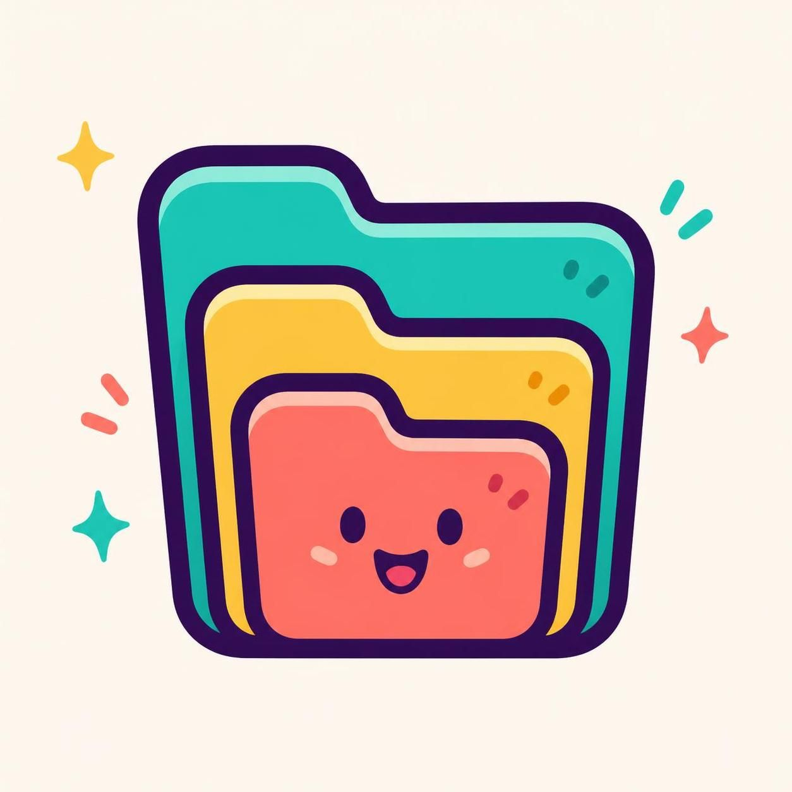

rc push
Nested repos, deepest first, then the superproject. The superproject stays local until every gitlink it records is already on a remote.

Move a superproject's gitlinks. Checkout, rebase, log, and diff stay git.
alias rc=recurse
Commit the child, push the child, then the superproject. Push the superproject first and the clone asks for a SHA nobody uploaded.
Nested repos, deepest first, then the superproject. The superproject stays local until every gitlink it records is already on a remote.
Fast-forward the superproject, then check out the recorded gitlinks. Pull follows the lockfile in.
# rc with no arguments is rc status rc # edit the superproject, a nested repo, or both rc commit -m "fix: widget" rc push
On the other machine, rc pull. After git checkout of another superproject commit, rc update checks out those gitlinks and leaves HEAD on a branch. To take a submodule's upstream, git pull in that repo, then rc commit.
. ........................ main a40529f clean libs/foo ............... main 3395016 dirty vendor/openssl ......... main 11aa22b pin a40529f ahead 1
clean is green, dirty is red, pin is magenta, and the branch, ahead, and behind are cyan. The SHA is dim. --color auto is the default. NO_COLOR turns it off.
The whole tree. No fetch. Branch or detached, dirty, untracked, the checkout SHA, and pin when that checkout is not the recorded gitlink.
Check out each recorded gitlink and attach a branch. Fast-forward when the pin is ahead. Refuse when the branch is ahead, the histories diverged, or the only option is detached.
One message, deepest dirty repo first, then the superproject. A stop names the repo and says the superproject was not updated.
Fast-forward the superproject from the current branch's upstream, then update. No path. pull.ff other than only is rejected.
Nested repos that are ahead, deepest first, then the superproject. The destination is the upstream branch name.
Zig 0.17. The binary is zig-out/bin/recurse.
Tagged releases publish archives on GitHub. Git still keeps .gitmodules, branch=, and the gitlinks.
git clone https://github.com/krakjn/recurse cd recurse zig build